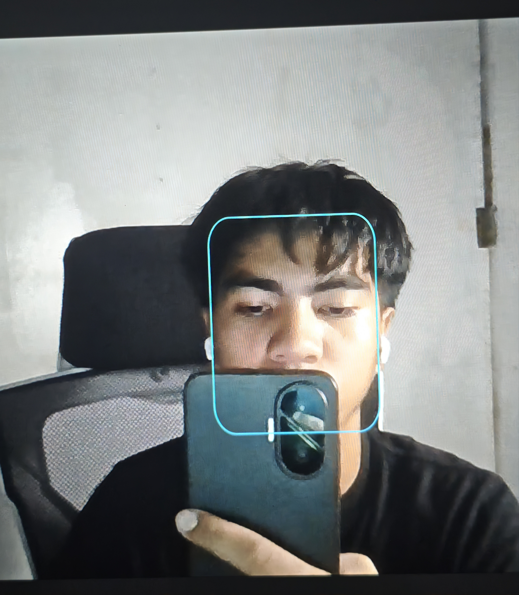
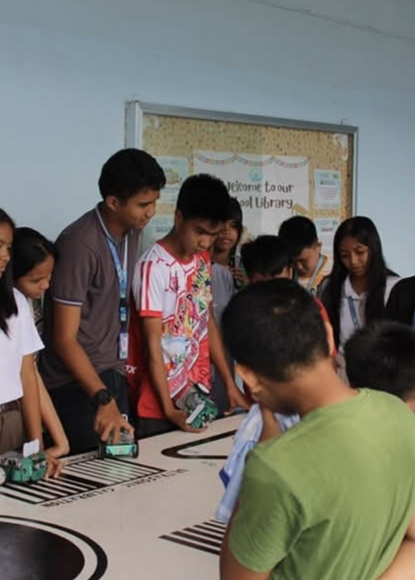
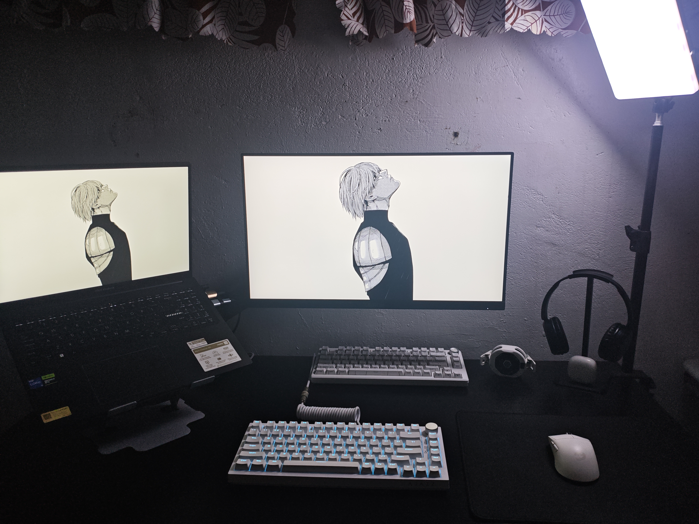
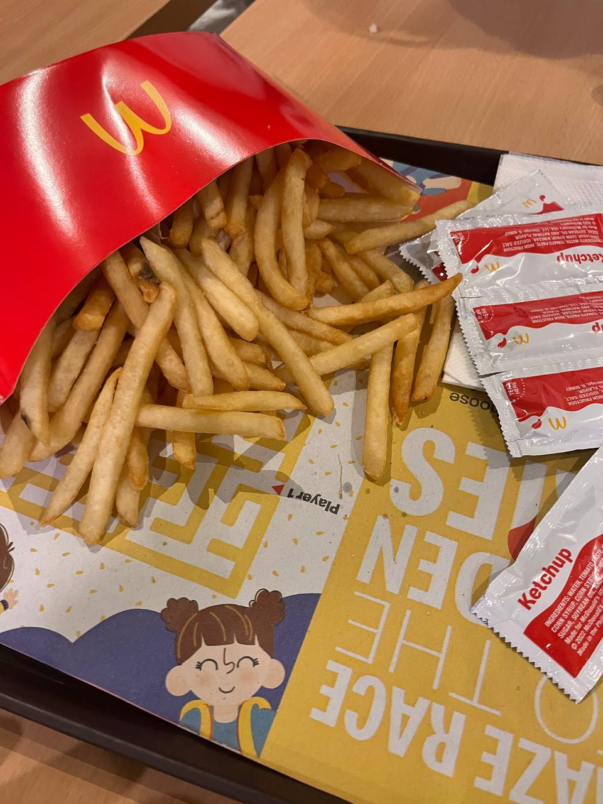

WELCOME TO MY PORTFOLIO
Hello, I'm Kent.
A Computer Science Student.
"To fall asleep you must first pretend to sleep. Therefore, the key to life is larping"
Explore My Portfolio
About Me
Hi! My name is Kent Dory C. Purisima. I am a 1st Year BSCS student from Bicol University. I am passionate about technology and programming, and I aspire to become a skilled software developer in the future.
In my free time, I enjoy exploring new technologies, playing video games, watching anime, and spending time with friends and family.
My Path Into Computing


My interest in computing started at a young age. I've always been fascinated by technology, and owning my own computer was one of my childhood dreams. I wanted to explore different software, understand how computers work, and experience more than what my phone could offer. This dream eventually became one of the reasons I pursued Computer Science.
During my Junior High School years, I participated in a robotics event called RoboRAVE, where I gained experience working with the Mio Robot. This further sparked my curiosity about technology. Later, getting my own set-up motivated me even more to explore programming, study independently, and deepen my understanding of computing.
I chose Computer Science because it allows me to turn my curiosity into practical skills. I want to continue expanding my knowledge, improve my programming abilities, and eventually become a skilled software developer.
Hobbies and Goals
Hobbies
- Playing Online Games
- Watching Anime and Doomscrolling
- Going to the Gym
Goals
- Be rich
- Finish my Degree
- Become a Software Developer/Engineer
My Class Schedule
| Class | Day | Time |
|---|---|---|
| Cs 101 - ITC | Mon | 9:00 am-12:00 pm |
| Cs 102 - Comprog | Mon, Tue, Wed | (Mon & Tue) 1:00 pm - 4:00 pm (Wed) 1:00 pm - 3:00 pm |
| Math Analysis | Tue, Thu, Fri | 9:00 am - 10:30 am & 10:00 am - 12:00 pm |
| Physics for Computing | Tue, Thu | 10:30 am - 12:00 pm |
| Pathfit | Wed | 7:00 am - 9:00 am |
| Understanding the Self | Fri | 1:00 pm - 4:00 pm |
| CWTS | Sat | 1:00 pm - 4:00 pm |
My Favorites



My Reflection
Throughout my experience in computing, I've noticed improvements not only in my technical knowledge but also in my personal skills. I've become more familiar with computers and technology, and I've even noticed an improvement in my typing speed. Before the first day of school, my average typing speed was around 45–50 WPM. Now, I can consistently reach approximately 65–75 WPM, which is a significant improvement for me.
Creating this portfolio also helped me recognize some of the goals I want to achieve. It allowed me to use my creativity, think critically, and challenge myself in ways I hadn't experienced as much before.